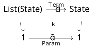
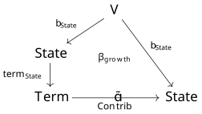
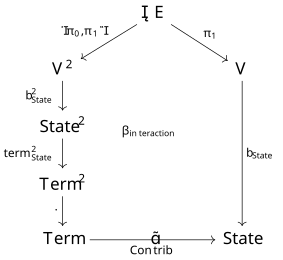
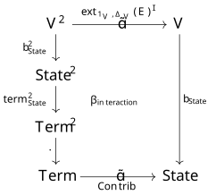

0001 Set-theoretic models of double theories
1 Summary
Many scientific models, especially quantitative models like systems of ODEs and stock-flow diagrams, cannot be usefully seen as categories in the small. CatColab therefore needs an approach to models that are merely set-theoretic. We propose one that is harmonious with the existing usage of double theories.
2 Motivation
Models in CatColab are categorical structures: every object type in a theory specifies a category in models of the theory, every morphism type specifies a profunctor, and so on. This design centers category theory in the small, a powerful and underappreciated point of view on modeling. It is the basis of CatColab’s approaches to motif finding, programming in domain-specific languages, flavored Petri nets, and refining models.
It is also rather opinionated. Not every model in science or engineering can be usefully seen as a categorical structure. This seems particularly true of quantitative formalisms like stock-flow diagrams with arbitrary flow functions and dynamical systems described by general ODEs.
Thus, as has long been apparent, CatColab needs an approach to models that are merely set-theoretic. One way to tell the difference between category-theoretic and set-theoretic models of a fixed theory is that the former should be the objects of a (nontrivial) 2-category or double category, whereas the latter are the objects of only a category. There are innumerable logical systems that can be used to specify set-theoretic models, this being a focus of universal algebra and mathematical logic for a century.
This RFC proposes an approach to set-theoretical models harmonious with CatColab’s existing category-theoretic models. The basic observation is that with surprisingly small changes to the definitions of theory and model, the formalism of double theories can toggle between category-theoretic and set-theoretic models. As a result, we will be able to reuse and share significant amounts of functionality across CatColab’s core and frontend.
There are reasons beyond expediency of implementation to favor double-categorical logic. A key reason, as we will see, is that it enables a simple and constrained form of type dependency.
3 Mathematical specification
Let’s compare how to configure double-categorical logic for set-theoretic versus category-theoretic models, starting with the minimal structure and gradually introducing features.
3.1 Virtual double categories
In the set-theoretic setting, a simple double theory is a virtual double category \mathbb{T} and a model of \mathbb{T} is a functor (of VDCs) \mathbb{T} \to \mathbb{S}\mathsf{et}.
In the category-theoretic setting, there are several essentially equivalent formulations. On one definition, a simple double theory is a unital VDC \mathbb{T} and a model of \mathbb{T} is a functor (of VDCs) \mathbb{T} \to \mathbb{S}\mathsf{et} or equivalently a normal functor \mathbb{T} \to \mathbb{C}\mathsf{at}= \mathbb{M}\mathsf{od}(\mathbb{S}\mathsf{et}). Alternatively, a simple double theory is an augmented VDC \mathbb{T} and a model of \mathbb{T} is a functor (of augmented VDCs) \mathbb{T} \to \mathbb{C}\mathsf{at}.
The difference between the two kinds of theories is thus about loose identities, which can either be defined by the universal property of units (Shulman and Cruttwell 2010) in a VDC or introduced as primitive structure (co-nullary cells) in an augmented VDC (Koudenburg 2020). And that is the extent of the difference.
3.2 Restrictions
Type-theoretically, an object in a theory \mathbb{T} is a type and a proarrow P: X \mathrel{\mkern 3mu\vcenter{\hbox{$\shortmid$}}\mkern-10mu{\to}}Y in \mathbb{T} is a family of types depending on X and Y. It is then natural to ask that the family P be re-indexable along maps (tight morphisms) into X and Y. That is precisely what restrictions in a VDC do, motivating the following definitions.
In the set-theoretic setting, a fibrant double theory is a VDC \mathbb{T} with restrictions and a model of \mathbb{T} is a functor \mathbb{T} \to \mathbb{S}\mathsf{et} that preserves restrictions.
In the category-theoretic setting, a fibrant double theory is a virtual equipment \mathbb{T} (i.e., a VDC with units and restrictions) and a model of \mathbb{T} is a functor (of VDCs) \mathbb{T} \to \mathbb{S}\mathsf{et} or equivalently a normal functor \mathbb{T} \to \mathbb{C}\mathsf{at}, recalling that any functor between virtual equipments preserves restrictions (Shulman and Cruttwell 2010, Theorem 7.24). Alternatively, a fibrant double theory is an augmented VDC \mathbb{T} with all restrictions and a model of \mathbb{T} is a functor (of augmented VDCs) \mathbb{T} \to \mathbb{C}\mathsf{at} that preserves restrictions.
As before, the category-theoretic theories differ from the set-theoretic ones only by requiring some form of loose identities.
3.3 Further structure
A virtual double category with restrictions is the most fundamental structure possessed by a double theory. To this may be added further double-categorical gadgets, such as:
- extensions
- cartesian products
- other double-categorical limits, such as tabulators
- modalities, such as lists.
Here we will only note that all of these features work equally well in the set- and category-theoretic settings.
4 Examples
Any Lawvere theory can be viewed as a cartesian double theory trivial in the loose direction, which is useful but not very interesting in its own right. We give a series of examples of set-theoretic double theories that make non-trivial use of the double-categorical structure.
4.1 Polynomial ODE systems
Consider the modal double theory freely generated by
- an object \mathrm{State}
- a proarrow \operatorname{Contrib}: \mathrm{List}(\mathrm{State}) \mathrel{\mkern 3mu\vcenter{\hbox{$\shortmid$}}\mkern-10mu{\to}}\mathrm{State}.
A finite model of this double theory consists of a finite set of state variables and a family of finite sets of contributions, indexed by pairs comprising a list of variables and a variable. The intended interpretation is that a contribution c : \operatorname{Contrib}([x_1, \dots, x_n], x)
represents an additive contribution to the vector field of the form \dot x \overset{+}{=}k_c \cdot x_1 \cdot x_2 \cdots x_n, where k_c \in \mathbb{R} is a free parameter. Finite models are thus universal for ODE systems defined by polynomial vector fields.
Crucially, composing such models by identifying state variables corresponds to composing parameterized polynomial ODE systems in the variable sharing paradigm. For the latter, see (Aduddell et al. 2024).
We emphasize that in this example, the numerical parameters k_c belong to the intended interpretation of the models, not to the models themselves. To use symbolic parameters within models, we must expand the theory.
4.2 Parameterized polynomial ODE systems
Consider the double theory freely generated by
an object \mathrm{State}
a proarrow \operatorname{Contrib}: \mathrm{List}(\mathrm{State}) \mathrel{\mkern 3mu\vcenter{\hbox{$\shortmid$}}\mkern-10mu{\to}}\mathrm{State}
a proarrow \mathrm{Param}: 1 \mathrel{\mkern 3mu\vcenter{\hbox{$\shortmid$}}\mkern-10mu{\to}}1
a cell

A freely and finitely generated (f.f.g.) model with no generating parameters is equivalent to a model of the previous theory: every contribution c is freely assigned its own parameter k_c, and there are no other parameters. More interestingly, in a finitely presented model of the theory, named parameters can be introduced and contributions assigned to them, enabling parameter tying or parameter sharing across contributions. Thus, in the intended interpretations, these models are more constrained than the previous ones.
The foregoing examples admit endless variations. Here is a general device to symbolically describe ODE systems outside the polynomial class.
4.3 ODE systems
Let \mathcal{T} be a Lawvere theory. For instance, \mathcal{T} could be the theory of commutative rings augmented with unary operations that will be interpreted as special functions like the exponential or sine.
Then there is a cartesian double theory presented by
- an object \mathrm{Term} along with arrows and equations embedding the Lawvere theory \mathcal{T} into the tight category of the double theory
- an object \mathrm{State}
- an arrow \mathrm{State}\to \mathrm{Term}
- a proarrow \operatorname{Contrib}: \mathrm{Term}\mathrel{\mkern 3mu\vcenter{\hbox{$\shortmid$}}\mkern-10mu{\to}}\mathrm{State}.
An f.f.g. model of this theory consists of finite sets of state variables and of exogenous variables (generators of type \mathrm{Term}), an embedding of the state variables into terms, and a family of finite sets of contributions, indexed by pairs comprising a term and a state variable. As before, a contribution c: \operatorname{Contrib}(v, x) represents an additive contribution to the vector field of the form \dot x \overset{+}{=}k_c \cdot v, \qquad k_c \in \mathbb{R}. Once interpretations of the Lawvere theory \mathcal{T} and the exogenous variables are fixed, such a model defines a vector field on the state variables.
4.4 Parameterized ODE systems
Given a Lawvere theory \mathcal{T}, there is a cartesian double theory presented by
- an object \mathrm{Term} along with arrows and equations embedding the Lawvere theory \mathcal{T} into the tight category of double theory
- objects \mathrm{State} and \mathrm{Param}
- arrows \mathrm{State}\to \mathrm{Term} and \mathrm{Param}\to \mathrm{Term}
- a proarrow \operatorname{Contrib}: \mathrm{Term}\mathrel{\mkern 3mu\vcenter{\hbox{$\shortmid$}}\mkern-10mu{\to}}\mathrm{State}.
An f.f.g. model of this theory specifies a parameterized ODE system, where each contribution c: \operatorname{Contrib}(v, x) contributes to the vector field simply as \dot x \overset{+}{=}v. Notice that parameters can now appear arbitrarily in terms, not just as linear coefficients.
CatColab currently implements “primitive stock-flow diagrams” (Baez et al. 2023), more likely to be called “system structure diagrams” by system dynamicists. There are several ways to formulate stock-flow diagrams with arbitrary flow functions using the above ideas. Here is one.
4.5 Stock and flow diagrams
Given a Lawvere theory \mathcal{T}, there is a cartesian double theory presented by
- an object \mathrm{Term} along with arrows and equations embedding the Lawvere theory \mathcal{T} into the tight category of double theory
- an object \mathrm{Stock}
- an arrow \mathrm{Stock}\to \mathrm{Term}
- a proarrow \mathrm{Flow}: \mathrm{Term}\mathrel{\mkern 3mu\vcenter{\hbox{$\shortmid$}}\mkern-10mu{\to}}\mathrm{Stock}\times \mathrm{Stock}.
In an f.f.g. model of this theory, a flow f: \mathrm{Flow}(v, (u, d)), where u stands for “upstream” and d for “downstream,” is intended to be interpreted as a pair of contributions to the vector field \dot u \overset{-}{=}k_f \cdot v, \qquad \dot d \overset{+}{=}k_f \cdot v, where k_f \in \mathbb{R}_+ is a free parameter.
5 Implementation
The close relation between set- and category-theoretic double theories, differing only in their handling of loose identities, means that this RFC has an easy path to implementation.
Starting with theories, the most naive implementation could be as simple as relaxing the hom_type method in the DblTheory trait to return an Option<MorType> instead of a MorType. This would be pleasingly symmetric with compose_types, which already returns an Option<MorType> as the structure is a VDC in which arbitrary proarrow composites may not exist. Concrete types for double theories, such as ModalDblTheory, could then gain a flag determining whether they will allow loose identities to be constructed.
Over time I would expect the data structures for set- and category-theoretic theories to diverge slightly, since the unbiased description of cell composites should differ between a VDC and a unital/augmented VDC. That, however, is a separate project. We already have decent data structures for cell composites in a bare VDC. Extending those to give normal forms for cell composites in a unital or augmented VDC is an open question about the existing, category-theoretic double theories.
As for models of double theories, the simplest implementation strategy is to leave the data structures themselves unchanged, changing only the type checking and validation logic. In this design, it would always be possible to construct a putative morphism, but such a morphism would fail to validate when the theory does not have Hom types.
Other parts of the CatColab system, such as the DoubleTT elaborator and the frontend, should require little or no changes.
6 Rationale and alternatives
As I’ve noted, there are countless logical systems that could be used to specify set-theoretic models, and I have no reason to think this one intrinsically privileged. I do however think it has appealing features compared to the following possible alternatives.
6.1 Fibered logics
In his monograph (Jacobs 1998), Jacobs takes the stance that “a logic is always a logic over a type theory,” formalized to mean that a logic is not just a category but a fibered category. Inasmuch as an equipment is a kind of fibered category, our approach is more a variant of than an alternative to Jacobs’, taking the context to be two-sided instead of one-sided. Though tastes may vary, two-sided contexts have the merits of fitting well with our existing approach to categorical models; being useful in situations where the dependent type is meaningfully directed even if it doesn’t compose, like the contributions in our ODE system examples; and entailing no loss of generality, since the one-sided case is recovered as types P: 1 \mathrel{\mkern 3mu\vcenter{\hbox{$\shortmid$}}\mkern-10mu{\to}}X, a time-honored tradition in category theory also appealed to in DOTS (Libkind and Myers 2025).
6.2 Instances
My original vision for “set-theoretic models” in CatColab is that they would exist one level lower in the system: as instances over categorical models. Both instances and set-theoretic models of double theories allow types and operations; the latter go further by allowing one level of type dependency. Insofar as the fibered and indexed views of dependency are mathematically equivalent, one could argue that nothing is gained by this move: dependent types can be encoded by display maps in an instance. However, there is a big difference between arrows and proarrows when presenting models by generators and relations. Applications of operations are freely adjoined to the model, whereas type parameters must be explicitly declared. This distinction was used in the double theory for parameterized polynomial ODE systems, allowing parameters to be freely adjoined when not specified while insisting that the monomials on the right-hand sides of contributions be given explicitly.
I still expect instances to play an important role in the design of CatColab, particularly in CatColab’s yet-to-be developed data layer, as a flat data representation should better interoperate with traditional relational database systems.
6.3 GATs
A key difference between GATs (Lynch et al., n.d.) and double theories is that the former allow arbitrary levels of type dependency while the latter have just one level of type dependency. Having a single level strikes me as a useful balance between simple types and full-blown dependent types. That said, when double theories are equipped with tabulators, mutually recursive construction of proarrows and tabulators allows type dependency at arbitrary levels. In this case, the precise relation between GATs and double theories is unknown to me.
7 Prior art
A number of us at Topos have had pairwise conversations about versions of this idea. Tim Hosgood has written up essentially the same approach to polynomial ODE systems in the roadmap.
My paper with Michael Lambert on double ologs (Lambert and Patterson 2024) shares ideas with this RFC and is a useful source of intuition and examples. But there are notable differences: here we envision semantics in \mathbb{S}\mathsf{et}, instead of \mathbb{R}\mathsf{el} as in the paper, and here we are interested in models given by finite presentation, instead of explicitly by tabular data as in a database. We also currently have no plans to implement the compact closed structure from the paper, which remains poorly understood for weak double categories, let alone for virtual double categories, and is the subject of ongoing research. The next section describes a situation where the structure of a compact closed double category would be useful, however.
8 Future possibilities
Making ODE systems be models of a theory opens the possibility of declaratively implementing ODE semantics for models of other theories, by migrating them along morphisms between theories. Just as there are many notions of functorial data migration between categorical databases, there will be many possible approaches to model migration. There has yet to be any theoretical study of migrating models of double theories.
Here I’ll sketch an approach inspired by conversations with David Jaz Myers, who was in turn inspired by ideas of Bob Atkey. In outline, to migrate models of some theory \mathbb{T} into ODEs, one first \Sigma-migrates into a larger theory containing both \mathbb{T} and the theory of ODEs, then \Delta-migrates into the theory of ODEs. The intermediate theory additionally contains “builder” operations that will, under \Sigma-migration, freely populate the ODE with variables and contributions. The technique is illustrated by the following example.
8.1 Lotka-Volterra ODE semantics for graphs
We construct the Lotka-Volterra ODE semantics (Aduddell et al. 2024) for graphs by a two-stage model migration. For simplicity, we use ordinary graphs rather than signed ones. So, let \mathbb{T}_\mathrm{Gph} be the non-unital double theory of graphs, i.e., the theory freely generated by an object V and a proarrow E: V \mathrel{\mkern 3mu\vcenter{\hbox{$\shortmid$}}\mkern-10mu{\to}}V. Let \mathbb{T}_\mathrm{ODE} be the theory of ODEs described above.
Present a theory \mathbb{T}_\mathrm{LV} that combines the theories of graphs and ODEs with following additional generators:
an arrow b_\mathrm{State}: V \to \mathrm{State}, the builder for state variables
a nullary cell, the builder for growth/decay terms:

a nullary cell, the builder for interaction terms:

where \top E is the tabulator of E.
A graph is migrated to an ODE system by pushing forward (\Sigma-migrating) along the inclusion \mathbb{T}_\mathrm{Gph}\hookrightarrow \mathbb{T}_\mathrm{LV} and then pulling back (\Delta-migrating) along the inclusion \mathbb{T}_\mathrm{ODE}\hookrightarrow \mathbb{T}_\mathrm{LV}.
This example illustrates the tradeoff between the two-sided contexts in double-categorical logic and the one-sided contexts of traditional fibered logic. On one hand, it is natural to regard edges as a directed dependent type E: V \mathrel{\mkern 3mu\vcenter{\hbox{$\shortmid$}}\mkern-10mu{\to}}V. On the other hand, there should be no need to use tabulators in this example. Rather, the builder for interaction terms should be a unary cell

whose domain is constructed from E as follows. First, one extends E: V \mathrel{\mkern 3mu\vcenter{\hbox{$\shortmid$}}\mkern-10mu{\to}}V on the right along the diagonal \Delta_V: V \to V \times V, yielding a proarrow \mathrm{ext}_{1_V,\Delta_V}(E): V \mathrel{\mkern 3mu\vcenter{\hbox{$\shortmid$}}\mkern-10mu{\to}}V \times V. Then, one uses the hypothesized compact closed structure to move one copy of V from the right side to the left side, yielding a proarrow \mathrm{ext}_{1_V,\Delta_V}(E)^\sharp: V \times V \mathrel{\mkern 3mu\vcenter{\hbox{$\shortmid$}}\mkern-10mu{\to}}V as shown.